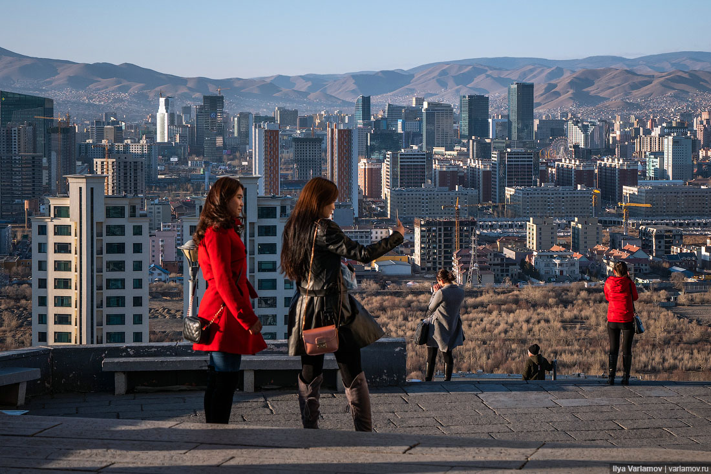

Ула́н-Ба́тор (монг. Улаанбаатар — «червоний богатир») — столиця Монголії. Розташований в долині річки Туул, на висоті 1300–1350 м. Виділений в самостійну адміністративну одиницю.
Місто було засноване в 1639 році під назвою Оргоо (монг. «палац»; звідси походить назва «Урга», яку вживали в російській і європейській літературі до 1924) як буддистський монастир. З 2-ї половини 17 ст. було кочовою (з 1778 — осілою) резиденцією маньчжурського намісника і адміністративним центром Зовнішньої Монголії. З 1706 називалося Іх-Хурее (монг. «Великий монастир»), з 1911 — Нійслел-Хурее (монг. «Столичний монастир»). У 1924 було перейменоване на Улан-Батор. Назва «Улан-Батор» означає монгольською мовою «Червоний богатир» (на честь Сухе-Батора).
Центральна площа Улан-Батора названа іменем Чингісхана, раніше носила назву героя революції Сухе-Батора. У 1946 році у центрі площі було встановлено пам'ятник Сухе-Батору. До 1989 року на площі відбувались щорічні громадські та молодіжні демонстрації та військові паради, найбільший з яких було влаштовано на честь візиту Леоніда Брежнєва у 1966 році.
